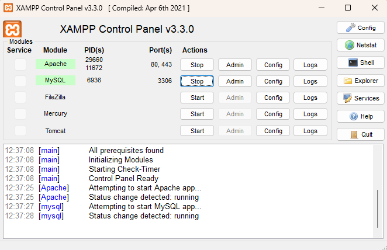
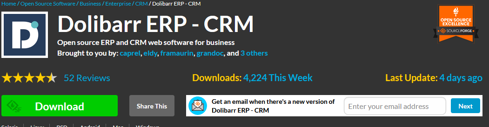
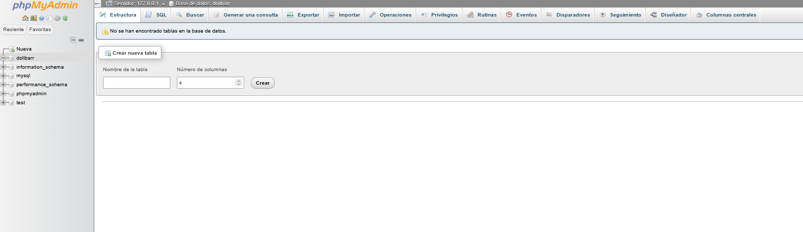
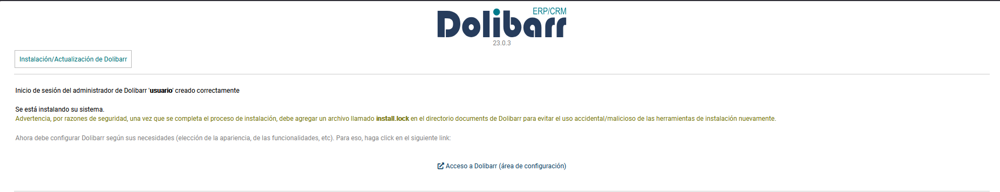
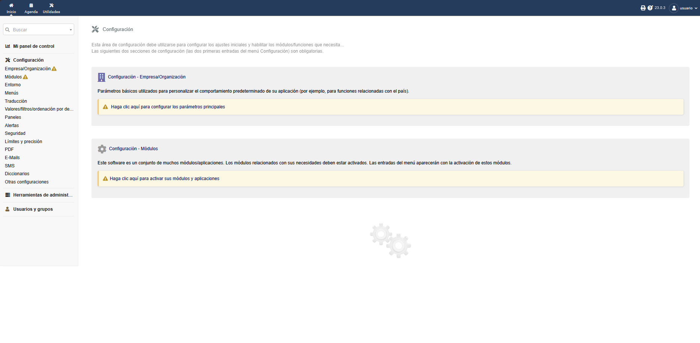

Instalación de Dolibarr
Dolibarr es un ERP/CRM gratuito y de código abierto. Se instala fácilmente en local utilizando XAMPP, que incluye Apache, MySQL y PHP.
Requisitos previos
- Windows 10 u 11.
- 4 GB de RAM como mínimo.
- Aproximadamente 1 GB de espacio libre.
- Conexión a Internet para descargar los paquetes.
Paso 1: Instalar XAMPP
Descargar XAMPP desde la web oficial apachefriends.org e instalarlo en C:\xampp.
Al terminar, abrir el panel de control de XAMPP e iniciar los servicios Apache y MySQL.

Captura 1: Panel de control de XAMPP con Apache y MySQL en marcha
Paso 2: Descargar Dolibarr
Ir a la web oficial dolibarr.org y descargar la última versión estable en formato .zip.

Captura 2: Página de descargas de Dolibarr
Paso 3: Copiar los archivos
- Descomprimir el archivo
.zip. - Copiar la carpeta resultante a
C:\xampp\htdocs\dolibarr.
Paso 4: Crear la base de datos
Abrir phpMyAdmin desde el navegador en http://localhost/phpmyadmin y crear una nueva base de datos llamada dolibarr.

Captura 3: Creación de la base de datos en phpMyAdmin
Paso 5: Asistente de instalación
En el navegador, ir a:
http://localhost/dolibarr/htdocs/install/El asistente pedirá los siguientes datos:
- Idioma: Español.
- Tipo de base de datos: MySQLi.
- Servidor: localhost, puerto 3306.
- Nombre de la base de datos: dolibarr.
- Usuario y contraseña de MySQL.
- Usuario y contraseña del administrador de Dolibarr.

Captura 4: Asistente de instalación de Dolibarr
Paso 6: Primer acceso
Una vez terminada la instalación, acceder a:
http://localhost/dolibarr/htdocs/E iniciar sesión con la cuenta de administrador creada.

Captura 5: Página de inicio de Dolibarr tras el primer login
Importante: Tras la instalación es recomendable borrar la carpeta install/ para evitar problemas de seguridad.
Problemas frecuentes
- El puerto 80 está ocupado: cambiar el puerto de Apache a 8080 desde el panel de XAMPP.
- Error de conexión a base de datos: comprobar que MySQL está iniciado y que el usuario y contraseña son correctos.